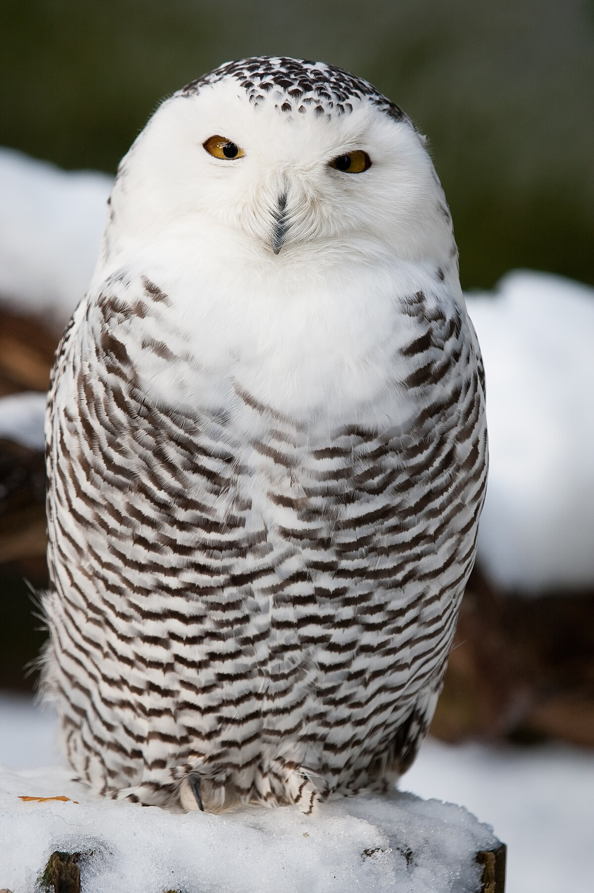
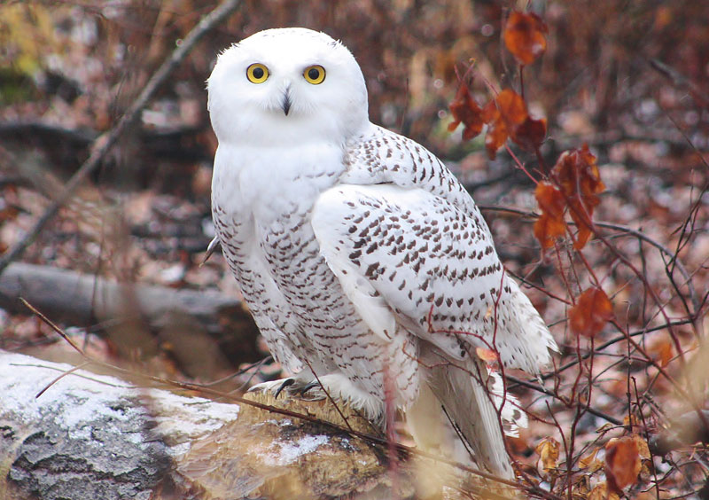
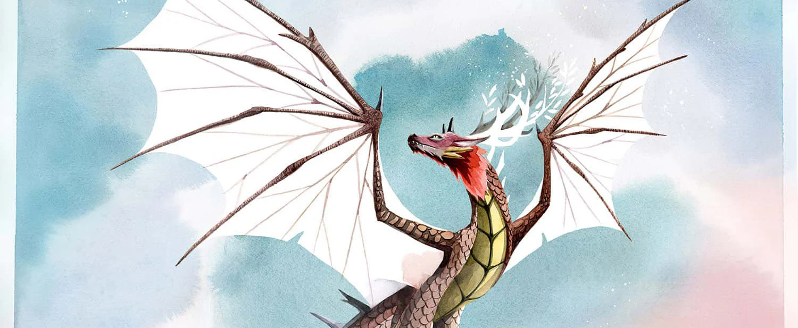
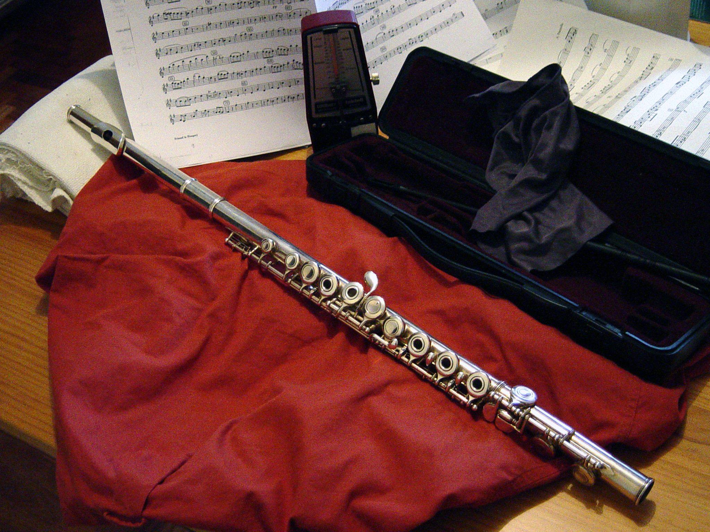
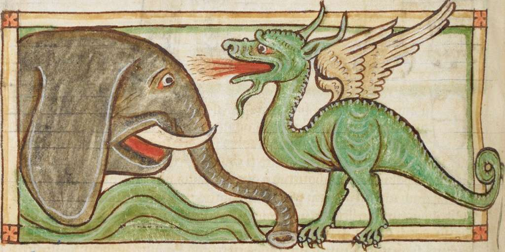
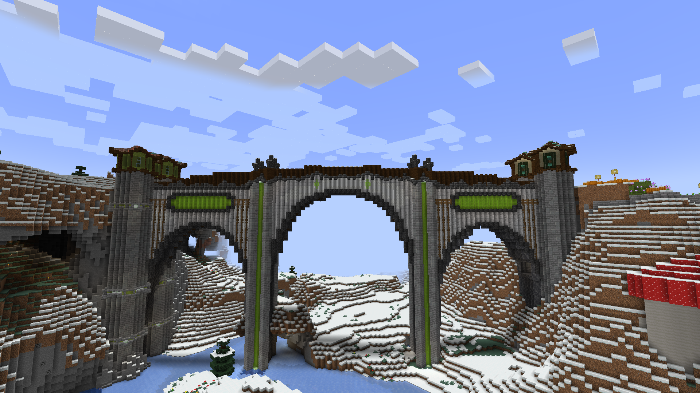

Bonjour! Je suis une élève du secondaire nommée "M". Ce site web a été créer dans le context d'un cours d'informatique.
Non, vous ne pouvez pas savoir plus à propos de moi. :)
Cette section contient des liens vers des choses que j'aime. Ceux-ci varient de des animaux à des jeux et tout ce qu'il y a entre les deux. Amusez-vous!
Si tu ne t'es pas rendu compte, j'adore les oiseaux, en particulier les harfangs des neiges! Alors, vous voici un lien vers la page de la Conservation de la Nature Canada sur cet bel oiseau.


Wyrmspan est l'un de mes jeu de societé favoris et plus de son prédecesseur Wingspan. Ces deux jeux travaillent la stratégie en construisant de engins pour obtenir des ressources, accueillir des creatures et atteindre des objectifs.

La flûte, spécifiquement la flûte traversière est mon instrument de choix. Le lien ci-haut te mêne vers une explication et histoire simple de la flûte.

Parmis les myths et légendes du monde, ceux des dragons sont très populaires. Ils sont la créature mythique dont j'aime le plus alors, le lien ci-haut te raconte l'histoire des dragons autour du monde.

Ce dernier lien est dédier vers mon jeux vidéo préférer. J'ai passée des nombreux heures à m'aventurer et à créer dans ce jeux alors il tient une place importante dans ma vie. L'image çi-contre est l'une de mes création dont je suis la plus fière, puis le lien mène simplement vers le site officiel du jeu.
| Technologie | Mon niveau de compétence |
|---|---|
| Scripte HTML et CSS | Débutante |
| Navigation général d'un ordinateur | Compétente à Experte |
Peu sur cette page s'applique à ma vie réelle, des informations fausses sont inclus